来源：https://fi9q1sf4gu.feishu.cn/docx/GYksdakjQoTGtlxnxiOcLA39nzh
网上有很多通过cursor,trae之类的AI编辑器生成UI的教程,这边介绍一下我的一些经验，如何让AI生成的UI的时候,更加的可控．
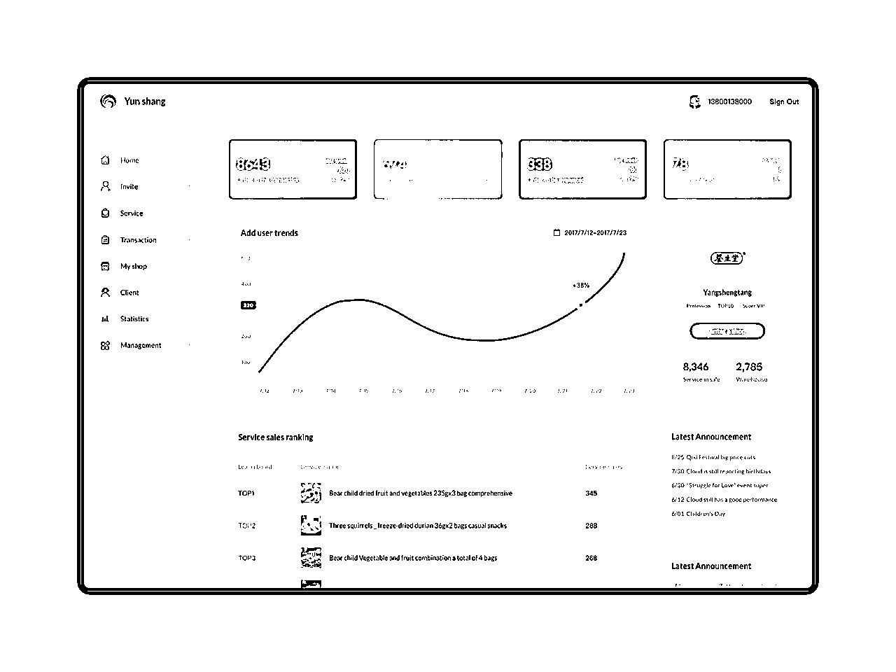
我从网上找了一个后台的设计图,我希望使用同样的风格和布局,我会这么操作.
你是一位资深前端开发工程师,UI/UX设计师。 你的任务是生成一个SASS UI模板页面. [#设计风格] - 优雅的极简主义美学与功能的完美平衡; - 恰到好处的留白设计; - 细腻的微交互; - 舒适的视觉比例; - 响应式设计 - 支持内容区域自适应 - 移动端优先考虑核心功能展示 [#技术规格] - 简洁的html结构 - 图标:引用在线矢量图标库内的图标(任何图标都不要带有背景色块、底板、外框） - 图片: 使用开源图片网站unsplash链接的形式引入 - 样式必须引入 tailwindcss CDN来完成 - 如果涉及图表,使用echarts实现 [#任务] 参考UI设计图,根据设计图的布局和配色,完成上面的模板页面代码.
这个指令最重要的是技术规格,规范了图标,图片,样式,图表的规则.
需要把设计图上传,让AI参考设计图进行代码生成.没有图像理解能力的大模型是不可用的,需要选择claude,Gemini,GPT的大模型,我测试出来复刻UI效果最好的是claude-3.5 sonnect
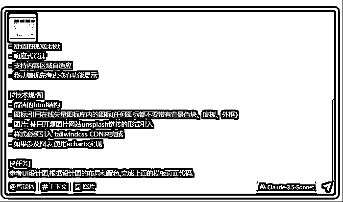
效果:
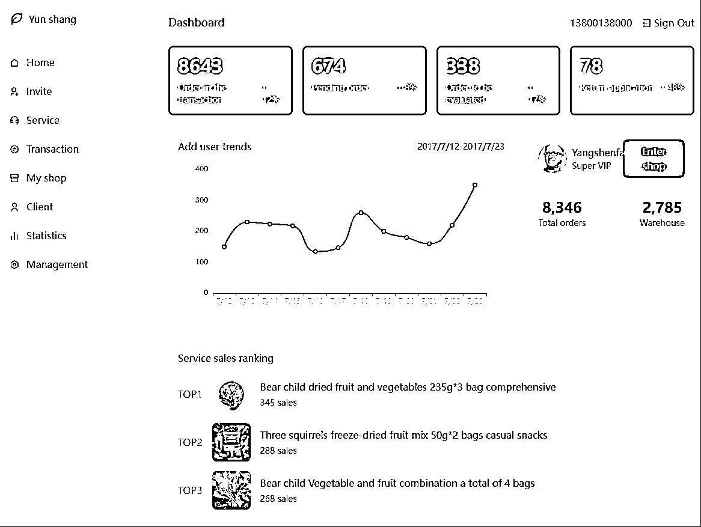
可以看到,效果已经很不错了,但是在主体内容布局上还是有出入.所以我会在指令上加上页面布局的提示词.
你是一位资深前端开发工程师,UI/UX设计师。
你的任务是生成一个SASS UI模板页面.
[#设计风格]
- 优雅的极简主义美学与功能的完美平衡;
- 恰到好处的留白设计;
- 细腻的微交互;
- 舒适的视觉比例;
- 响应式设计
- 支持内容区域自适应
- 移动端优先考虑核心功能展示
[#技术规格]
- 简洁的html结构
- 图标:引用在线矢量图标库内的图标(任何图标都不要带有背景色块、底板、外框）
- 图片: 使用开源图片网站unsplash链接的形式引入
- 样式必须引入 tailwindcss CDN来完成
- 如果涉及图表,使用echarts实现
[#页面布局]
- 左侧菜单栏
- 右侧内容区
- 顶部菜单栏
- 登录用户信息
- 登录
- 主内容区
- 四个数据卡片
- 核心内容区域
- Add User Trends
- Service Sales ranking
- 侧栏
- 品牌介绍
- Latest Announcement
[#任务]
参考UI设计图,根据设计图的布局和配色,完成上面的模板页面代码.
主要是增加了页面布局的提示词
效果:
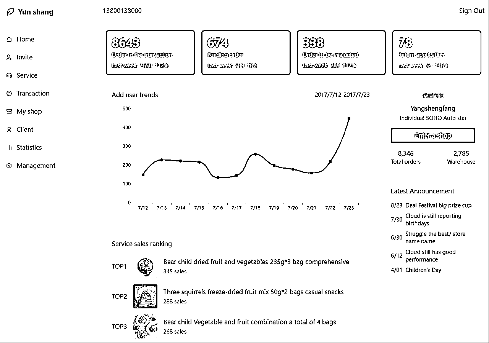
可以看到主体区域的内容基本上就一致了.
可以看到生成的四个数据卡片的背景色是纯色背景,并不像参考图的渐变色.可以通过指令进行微调
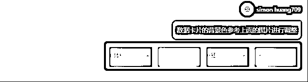
调整后效果:
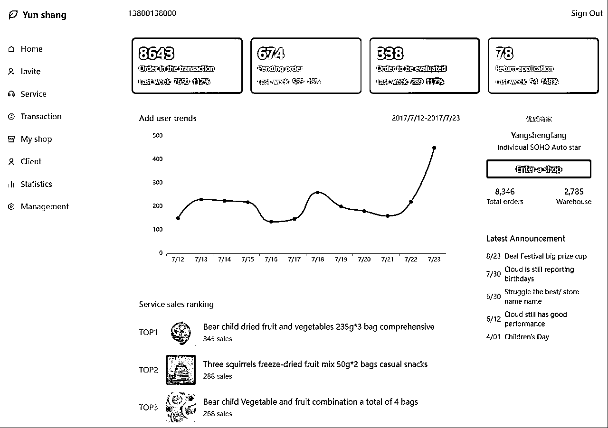
可以将上面生成的网页直接生成设计规范文档,应用于别的项目开发
使用claude3.7-sonnet
根据这个index.html生成一个UI开发文档,需要规范布局,配置,风格,组件库,配色等规范,生成的文档可以直接用于AI生成其它页面.
结果如下:
[#UI开发规范]
1. 概述
一个企业级SaaS应用，采用现代化的UI设计，以简洁、专业的风格为基础，提供流畅的用户体验。本文档定义了UI开发规范，包括布局结构、设计风格、组件规范、色彩系统等，用于指导开发团队和AI生成相关页面。
2. 布局规范
2.1 页面结构
页面采用经典的左侧固定导航 + 右侧内容区的布局方式：
侧边栏：固定宽度为64px，包含品牌标识和主导航
主内容区：采用弹性布局，宽度自适应，包含顶部导航栏和主要内容
响应式设计：支持各种屏幕尺寸，小屏幕下可收起侧边栏
2.2 网格系统
基于Tailwind CSS的网格系统
主要内容区采用grid布局，间距统一为gap-6
卡片类组件统一使用rounded-xl圆角和shadow-sm阴影效果
内边距统一使用p-6，确保视觉一致性
2.3 间距体系
小间距：4px (space-x-1, space-y-1)
中间距：8px (space-x-2, space-y-2)
大间距：16px (space-x-4, space-y-4)
段落间距：24px (space-x-6, space-y-6)
区块间距：32px (space-x-8, space-y-8)
3. 色彩系统
3.1 主色调
系统主色为水鸭绿色系，代表科技感和专业性：
主色：#40E0D0 (卡片绿)
辅助色：#98FB98 (浅绿)
3.2 功能色
粉色系：#FF69B4 -> #FFB6C1 (用于提示相关的状态)
蓝色系：#1E90FF -> #87CEEB (用于信息相关的状态)
紫色系：#9370DB -> #DDA0DD (用于特殊功能的状态)
3.3 中性色
背景色：bg-gray-50
卡片背景：bg-white
文本主色：text-gray-900
文本次要色：text-gray-600
文本淡色：text-gray-500
分割线：border-gray-200
3.4 渐变色
统一使用从左到右的渐变效果：
绿色渐变：from-green-start to-green-end
粉色渐变：from-pink-start to-pink-end
蓝色渐变：from-blue-start to-blue-end
紫色渐变：from-purple-start to-purple-end
4. 字体与排版
4.1 字体家族
主字体：'Inter', sans-serif
备用字体：系统默认无衬线字体
4.2 字体大小
特大标题：24px (text-3xl)
大标题：20px (text-2xl)
中标题：18px (text-xl)
小标题：16px (text-lg)
正文：14px (text-base)
辅助文字：12px (text-sm)
最小文字：10px (text-xs)
4.3 字重
普通：400 (font-normal)
中等：500 (font-medium)
半粗：600 (font-semibold)
5. 组件规范
5.1 导航组件
侧边导航
宽度：256px (w-64)
背景色：白色 (bg-white)
阴影：shadow-lg
导航项：
正常状态：text-gray-600 hover:bg-gray-50 rounded-lg
激活状态：text-teal-500 bg-teal-50 rounded-lg
内边距：px-4 py-2
5.2 统计卡片
背景：渐变色背景
圆角：rounded-xl
内边距：p-6
文字颜色：白色 (text-white)
悬停效果：轻微上移 (translateY(-2px))
高光效果：右上角45度渐变高光
5.3 图表组件
容器：白色背景、圆角、轻微阴影
线条颜色：主色 #40E0D0
线条宽度：2px
数据点颜色：主色 #40E0D0
标题样式：text-lg font-semibold
5.4 列表组件
行间距：space-y-2
悬停效果：hover:text-gray-900
文本颜色：text-gray-600
日期宽度固定：w-20
5.5 按钮组件
主按钮：bg-teal-500 text-white rounded-lg px-4 py-2 hover:bg-teal-600
次要按钮：bg-gray-100 text-gray-700 rounded-lg px-4 py-2 hover:bg-gray-200
文本按钮：text-gray-600 hover:text-gray-800
6. 图标系统
使用stroke类型的线性图标
统一大小：w-5 h-5或w-8 h-8(大图标)
颜色：继承当前文本颜色 (currentColor)
线条宽度：2px (stroke-width="2")
线条端点：圆形 (stroke-linecap="round")
线条连接：圆形 (stroke-linejoin="round")
7. 动效规范
过渡时间：0.3秒 (transition: all 0.3s ease)
悬停效果：轻微位移或颜色变化
保持克制，不使用夸张的动画效果
8. 开发技术栈
HTML5 + CSS3
Tailwind CSS 框架
SVG 图标和简单图表
现代JavaScript (ES6+)
9. Tailwind CSS 配置
```html
tailwind.config = {
theme: {
extend: {
colors: {
'card-green': '#40E0D0',
'card-pink': '#FF69B4',
'card-blue': '#1E90FF',
'card-purple': '#9370DB',
},
gradientColorStops: {
'green-start': '#40E0D0',
'green-end': '#98FB98',
'pink-start': '#FF69B4',
'pink-end': '#FFB6C1',
'blue-start': '#1E90FF',
'blue-end': '#87CEEB',
'purple-start': '#9370DB',
'purple-end': '#DDA0DD',
}
}
}
}
```
10. 组件样式代码片段
10.1 统计卡片
```html
8643
交易中的订单
+12%
上周
```
10.2 导航项
```html
菜单项
```
10.3 列表项
```html
8/23
公告内容
```
11. 页面模板结构
```html
云商 - 页面名称
```
把上面的生成结果,直接放在项目规则文件中,或者指令中使用.
媒体管理工具
[#角色]
你是一位资深前端开发工程师,UI/UX设计师。
[#设计风格]
优雅的极简主义美学与功能的完美平衡; 清新柔和的渐变配色与品牌色系浑然一体; 彩色界面,渐变色网页背景;恰到好处的留白设计; 轻盈通透的沉浸式体验; 信息层级通过微妙的阴影过渡与模块化卡片布局清晰呈现; 用户视线能自然聚焦核心功能; 精心打磨的圆角; 细腻的微交互; 舒适的视觉比例; 强调色：按平板电脑软件类型生成;
[#技术规格]
1、简洁的html结构
2、图标:引用在线矢量图标库内的图标(任何图标都不要带有背景色块、底板、外框）
3、图片: 使用开源图片网站链接的形式引入
4、样式必须引入 tailwindcss CDN来完成
5、不要显示状态栏以及时间、信号等信息
[#媒体管理工具UI开发规范]
1. 概述
[媒体管理工具]一个企业级SaaS应用，采用现代化的UI设计，以简洁、专业的风格为基础，提供流畅的用户体验。本文档定义了[媒体管理工具]的UI开发规范，包括布局结构、设计风格、组件规范、色彩系统等，用于指导开发团队和AI生成相关页面。
2. 布局规范
2.1 页面结构
媒体管理工具采用经典的左侧固定导航 + 右侧内容区的布局方式：
侧边栏：固定宽度为64px，包含品牌标识和主导航
主内容区：采用弹性布局，宽度自适应，包含顶部导航栏和主要内容
响应式设计：支持各种屏幕尺寸，小屏幕下可收起侧边栏
2.2 网格系统
基于Tailwind CSS的网格系统
主要内容区采用grid布局，间距统一为gap-6
卡片类组件统一使用rounded-xl圆角和shadow-sm阴影效果
内边距统一使用p-6，确保视觉一致性
2.3 间距体系
小间距：4px (space-x-1, space-y-1)
中间距：8px (space-x-2, space-y-2)
大间距：16px (space-x-4, space-y-4)
段落间距：24px (space-x-6, space-y-6)
区块间距：32px (space-x-8, space-y-8)
3. 色彩系统
3.1 主色调
系统主色为水鸭绿色系，代表科技感和专业性：
主色：#40E0D0 (卡片绿)
辅助色：#98FB98 (浅绿)
3.2 功能色
粉色系：#FF69B4 -> #FFB6C1 (用于提示相关的状态)
蓝色系：#1E90FF -> #87CEEB (用于信息相关的状态)
紫色系：#9370DB -> #DDA0DD (用于特殊功能的状态)
3.3 中性色
背景色：bg-gray-50
卡片背景：bg-white
文本主色：text-gray-900
文本次要色：text-gray-600
文本淡色：text-gray-500
分割线：border-gray-200
3.4 渐变色
统一使用从左到右的渐变效果：
绿色渐变：from-green-start to-green-end
粉色渐变：from-pink-start to-pink-end
蓝色渐变：from-blue-start to-blue-end
紫色渐变：from-purple-start to-purple-end
4. 字体与排版
4.1 字体家族
主字体：'Inter', sans-serif
备用字体：系统默认无衬线字体
4.2 字体大小
特大标题：24px (text-3xl)
大标题：20px (text-2xl)
中标题：18px (text-xl)
小标题：16px (text-lg)
正文：14px (text-base)
辅助文字：12px (text-sm)
最小文字：10px (text-xs)
4.3 字重
普通：400 (font-normal)
中等：500 (font-medium)
半粗：600 (font-semibold)
5. 组件规范
5.1 导航组件
侧边导航
宽度：256px (w-64)
背景色：白色 (bg-white)
阴影：shadow-lg
导航项：
正常状态：text-gray-600 hover:bg-gray-50 rounded-lg
激活状态：text-teal-500 bg-teal-50 rounded-lg
内边距：px-4 py-2
5.2 统计卡片
背景：渐变色背景
圆角：rounded-xl
内边距：p-6
文字颜色：白色 (text-white)
悬停效果：轻微上移 (translateY(-2px))
高光效果：右上角45度渐变高光
5.3 图表组件
容器：白色背景、圆角、轻微阴影
线条颜色：主色 #40E0D0
线条宽度：2px
数据点颜色：主色 #40E0D0
标题样式：text-lg font-semibold
5.4 列表组件
行间距：space-y-2
悬停效果：hover:text-gray-900
文本颜色：text-gray-600
日期宽度固定：w-20
5.5 按钮组件
主按钮：bg-teal-500 text-white rounded-lg px-4 py-2 hover:bg-teal-600
次要按钮：bg-gray-100 text-gray-700 rounded-lg px-4 py-2 hover:bg-gray-200
文本按钮：text-gray-600 hover:text-gray-800
6. 图标系统
使用stroke类型的线性图标
统一大小：w-5 h-5或w-8 h-8(大图标)
颜色：继承当前文本颜色 (currentColor)
线条宽度：2px (stroke-width="2")
线条端点：圆形 (stroke-linecap="round")
线条连接：圆形 (stroke-linejoin="round")
7. 动效规范
过渡时间：0.3秒 (transition: all 0.3s ease)
悬停效果：轻微位移或颜色变化
保持克制，不使用夸张的动画效果
8. 开发技术栈
HTML5 + CSS3
Tailwind CSS 框架
SVG 图标和简单图表
现代JavaScript (ES6+)
9. Tailwind CSS 配置
```html
tailwind.config = {
theme: {
extend: {
colors: {
'card-green': '#40E0D0',
'card-pink': '#FF69B4',
'card-blue': '#1E90FF',
'card-purple': '#9370DB',
},
gradientColorStops: {
'green-start': '#40E0D0',
'green-end': '#98FB98',
'pink-start': '#FF69B4',
'pink-end': '#FFB6C1',
'blue-start': '#1E90FF',
'blue-end': '#87CEEB',
'purple-start': '#9370DB',
'purple-end': '#DDA0DD',
}
}
}
}
```
10. 组件样式代码片段
10.1 统计卡片
```html
8643
交易中的订单
+12%
上周
```
10.2 导航项
```html
菜单项
```
10.3 列表项
```html
8/23
公告内容
```
11. 页面模板结构
```html
云商 - 页面名称
```
[#第三方组件]
图表用echart, 图表颜色使用主题色。chart的容器需要设置合适的高度。
[#功能设计方案]
# 社效媒体管理工具 - 功能设计方案
## 1. 页面架构
### 1.1 仪表盘页面 (dashboard.html)
- 数据概览区
- 关键指标卡片（粉丝增长、互动率、发布量、转化率）
- 趋势图表（30天数据走势）
- 热门内容Top5
- 任务提醒区
- 待处理评论
- 待发布内容
- 待审核内容
- 数据分析区
- 粉丝画像分析
- 内容效果分析
- 互动数据分析
### 1.2 内容管理页面 (content.html)
- 内容日历视图
- 月历展示
- 发布时间线
- 内容列表
- 状态筛选（草稿、待审核、已发布、已下线）
- 内容分类筛选
- 搜索功能
- 内容编辑器
- 富文本编辑
- 媒体素材库
- 定时发布设置
### 1.3 数据分析页面 (analytics.html)
- 数据筛选器
- 时间范围选择
- 平台选择
- 内容类型选择
- 数据可视化
- 互动趋势图
- 粉丝增长图
- 内容效果对比
- 数据报表
- 自定义报表
- 导出功能
### 1.4 粉丝管理页面 (fans.html)
- 粉丝列表
- 基础信息
- 互动历史
- 标签管理
- 粉丝分组
- 自定义分组
- 批量操作
- 互动管理
- 评论管理
- 私信管理
### 1.5 素材库页面 (assets.html)
- 素材管理
- 图片素材
- 视频素材
- 文案模板
- 分类管理
- 自定义分类
- 标签管理
- 上传功能
- 批量上传
- 素材编辑
### 1.6 设置页面 (settings.html)
- 账号管理
- 平台账号绑定
- 权限设置
- 系统设置
- 基础配置
- 通知设置
- 团队管理
- 成员管理
- 角色权限
## 2. 导航设计
### 左侧主导航
- 仪表盘
- 内容管理
- 数据分析
- 粉丝管理
- 素材库
- 设置
### 顶部次导航
- 用户信息
- 消息通知
- 快捷操作
## 3. 交互设计
- 所有列表支持分页、排序、筛选
- 数据图表支持时间范围选择和数据下钻
- 编辑操作需二次确认
- 批量操作支持多选
- 拖拽排序和文件上传采用现代化交互
## 4. 响应式设计
- 布局适配最小1280px宽度
- 支持内容区域自适应
- 移动端优先考虑核心功能展示
[#任务]
这是一个【社效媒体管理工具】,PC软件,左边为菜单栏,右边为内容区域 ,根据功能设计方案进行前端开发。 为每个页面都生成一个独立的静态html,页面需要可以响应用户操作, 用于展示UI效果,先不要输出html代码, 用户要求生成哪个页面, 你再生成哪个页面。每个页面的菜单需要互相链接.不需要启动本地服务器来预览。
通过UI规范文档生成其它项目UI
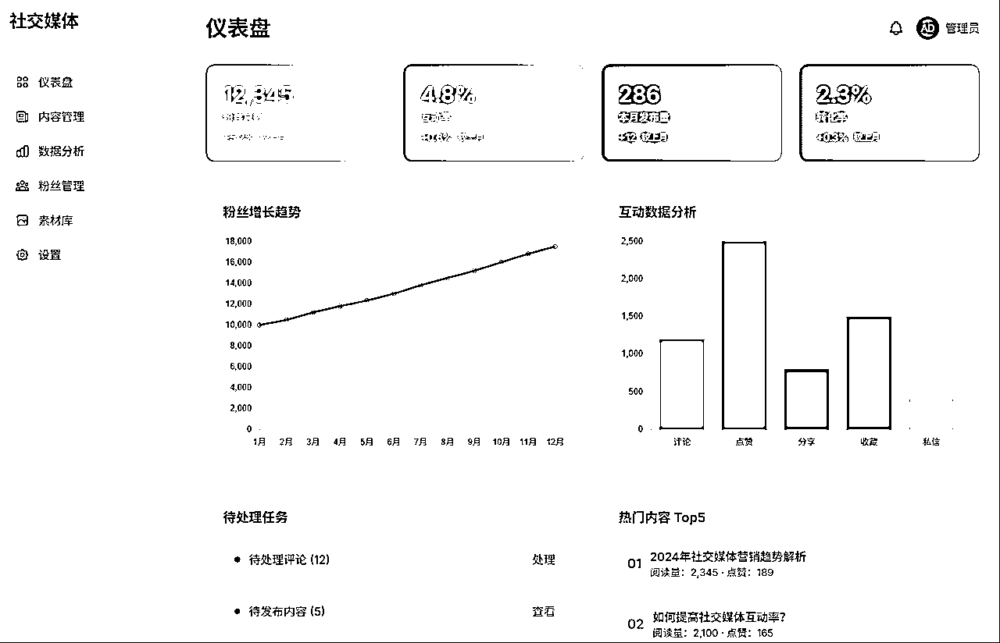
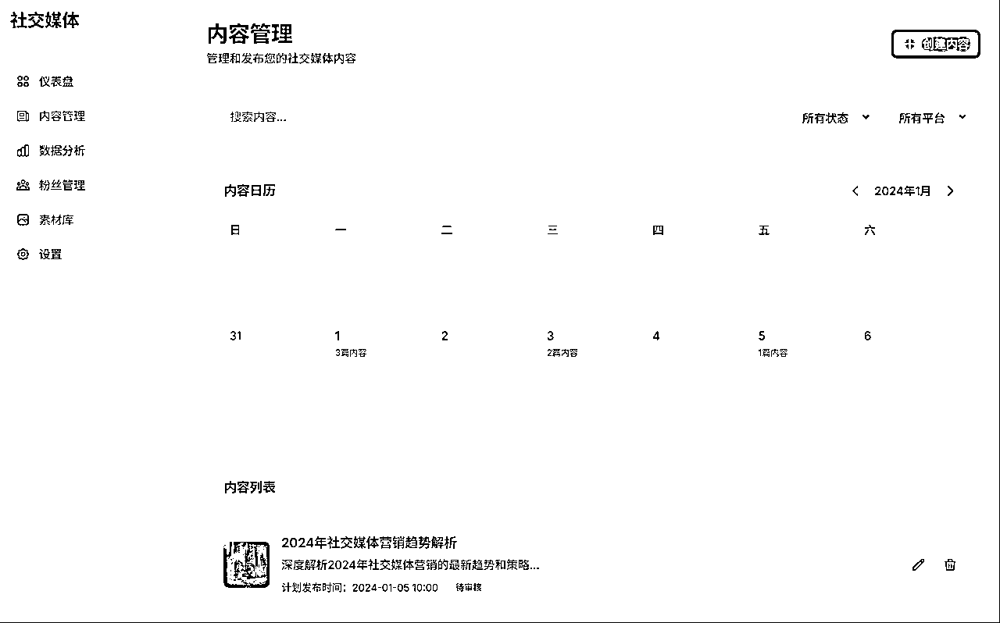
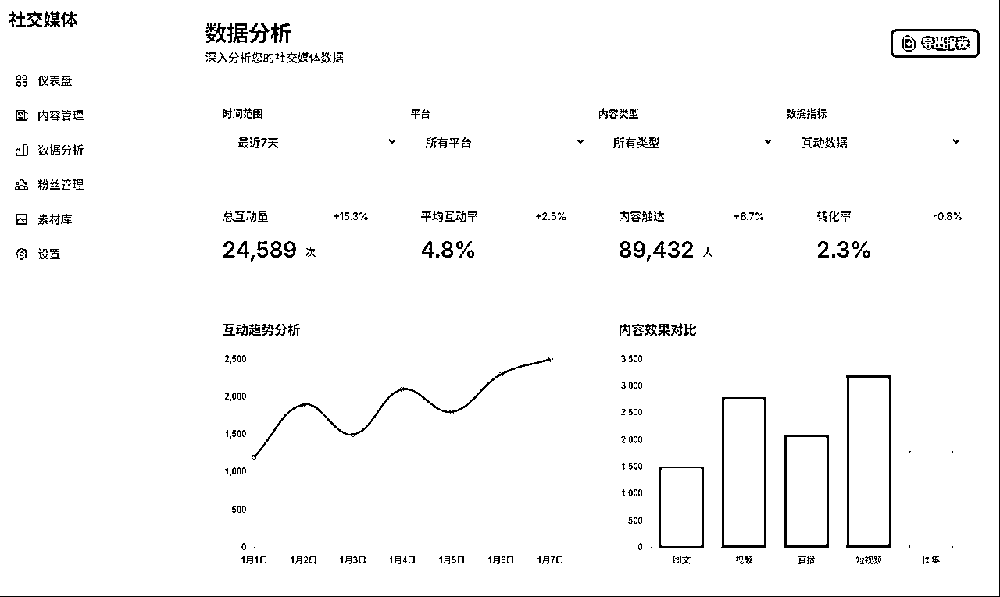
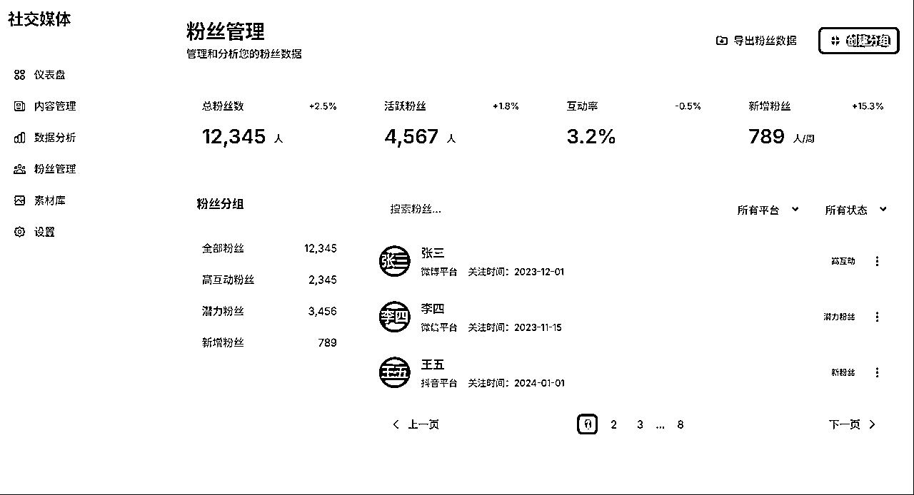
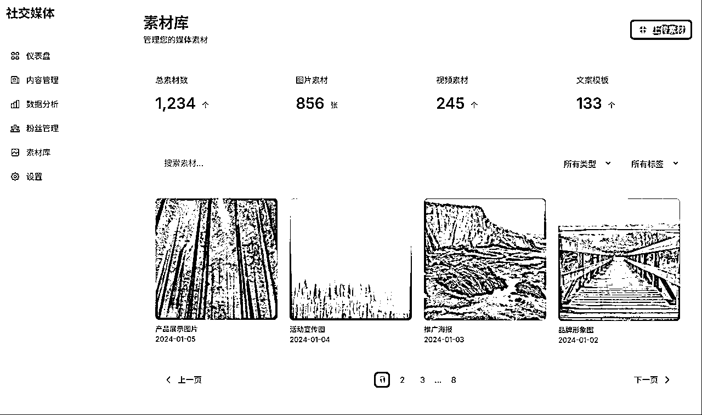
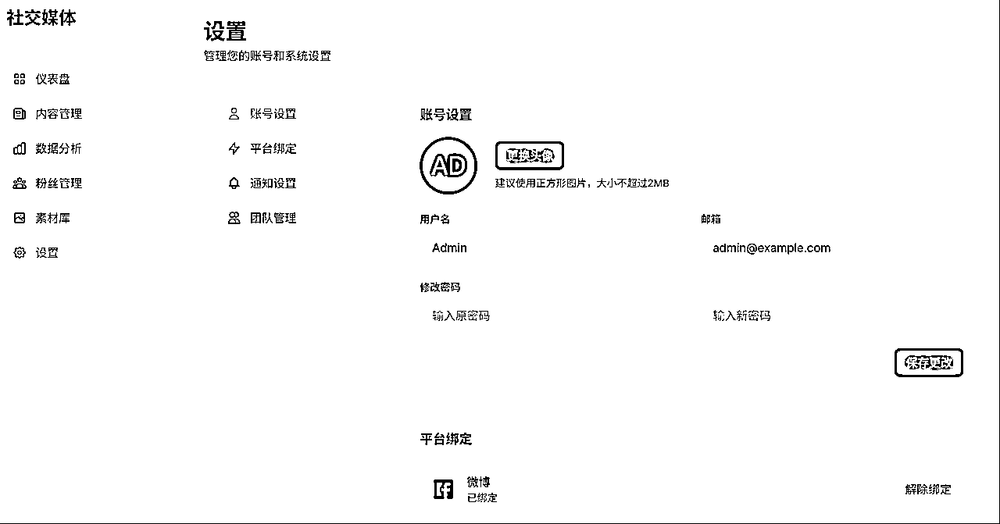